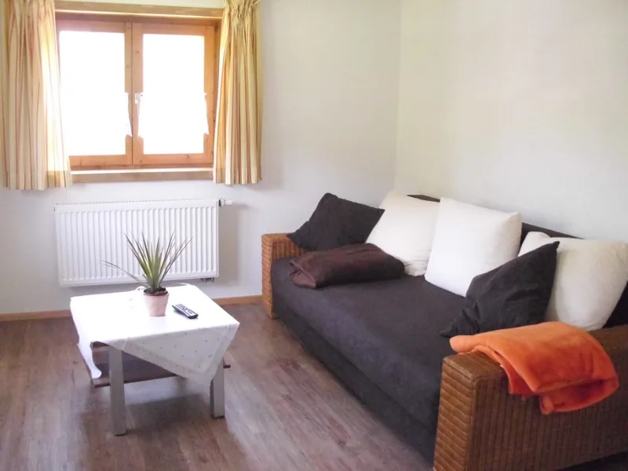

Grüße aus derSalmaser Höhe 14 Fotos
Liebe Gäste,
die Salmaser Höhe ist für 4 Personen gedacht, Mindestaufenthalt 3 Tage.
- Renoviert im August 2010
- 3 Sterne
- Nichtraucher-Wohnung
- Brötchenservice
Ausgestattet mit Wasserkocher, Kaffeemaschine, Handtüchern usw.
AnSie & Ihre FamilieFerienwohnung Salmaser Höhe87534 Thalkirchdorf